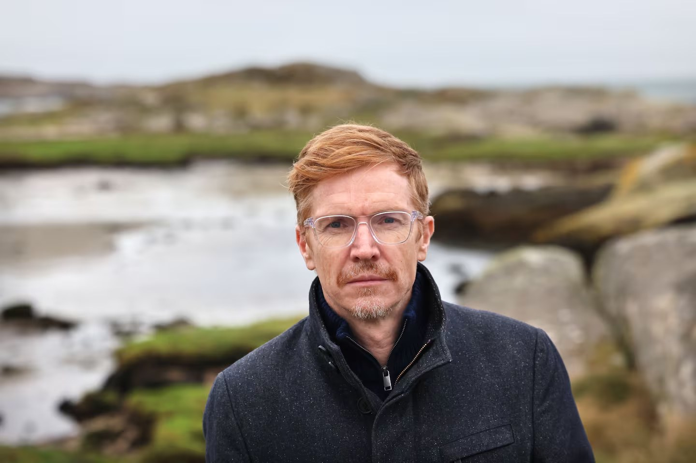
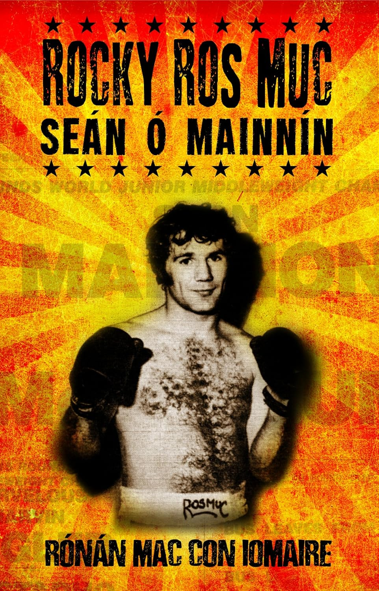
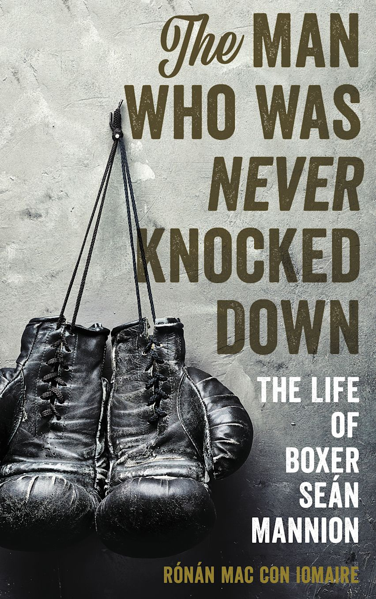
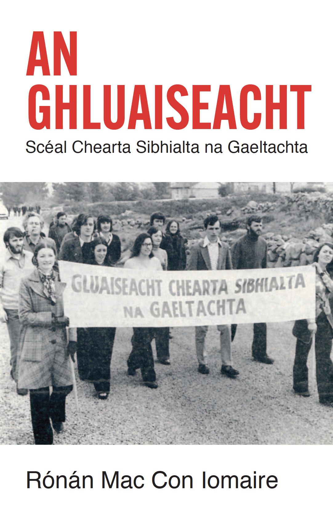
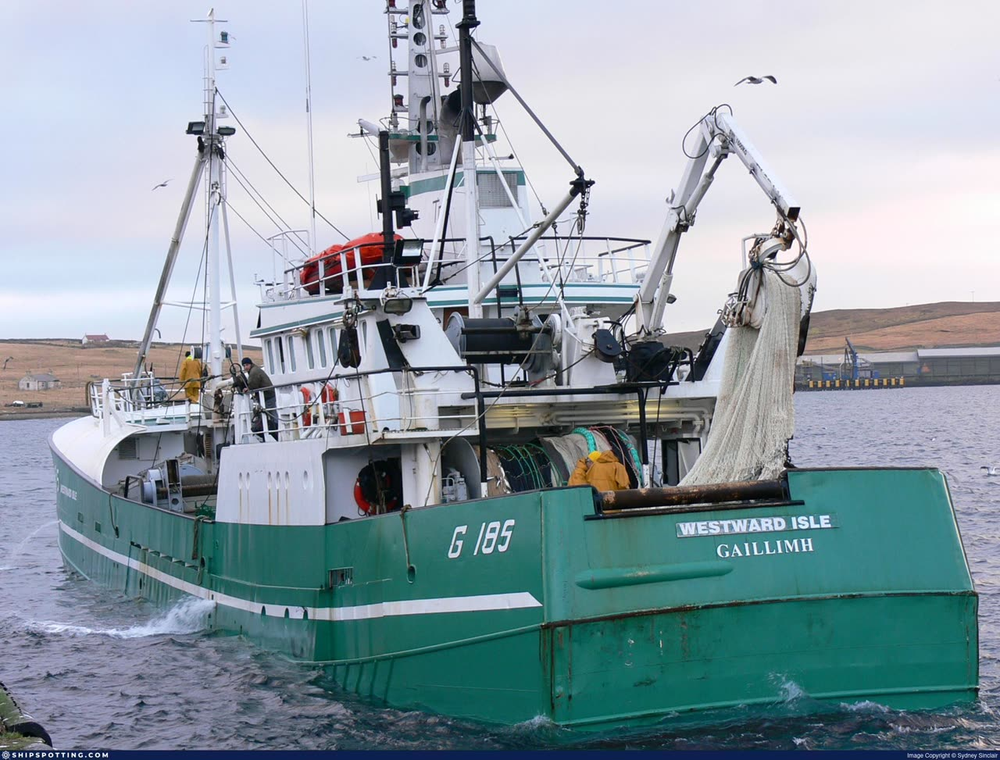
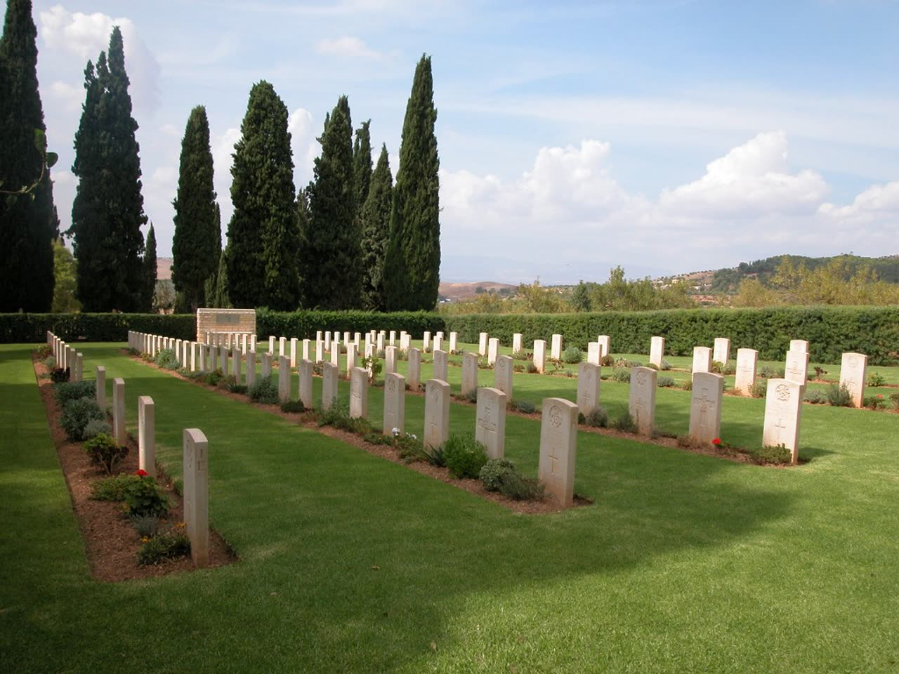
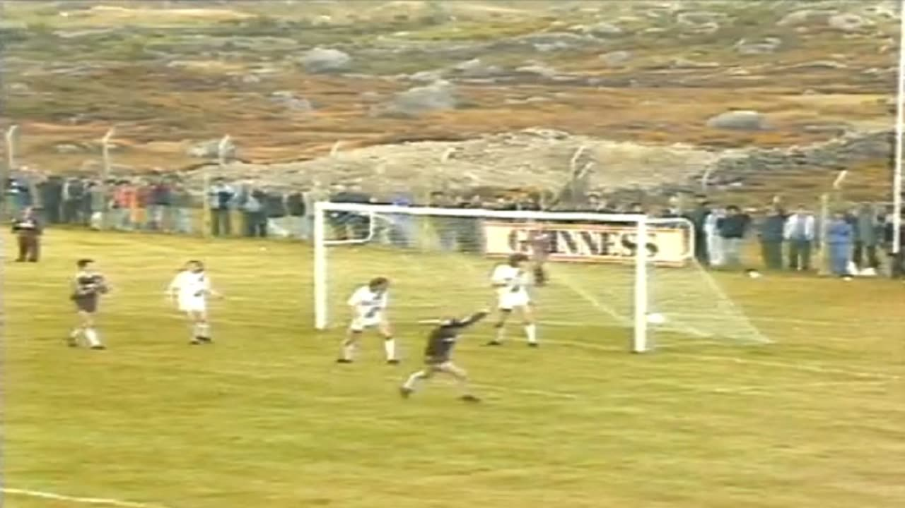

Scannán faisnéise faoi Sheán Ó Mainnín, an dornálaí ó Ros Muc a throid ar son teideal domhanda.
A documentary about Seán Mannion, the boxer from Ros Muc who fought for a world title.
• Údar & Craoltóir Author & Broadcaster
• 53.2644° N / 9.6056° W
Scrollaigh Scroll ↓
• 01 — Léirmheas Reviews
"A highlight [of 2025] is Rónán Mac Con Iomaire's An Ghluaiseacht... Mac Con Iomaire writes like a novelist, ensuring the history is riveting."
— Eilís Ní Dhuibhne, Irish Times
"One doesn't need to be into pugilism to appreciate Rocky Ros Muc, a documentary that is as much about roots and identity as it is a portrait of Irish American boxer Sean Mannion."
— Michael Rechtshaffen, Los Angeles Times
"The book is beautifully written, unerringly researched & utterly gripping from start to finish."
— Dave O'Connell, Connacht Tribune
"Rónán Mac Con Iomaire has produced a book on the life of Seán Mannion that is simply a triumph in sportswriting and dramatic storytelling."
— Conan Doherty, SportsJoe.ie
"In The Man Who Was Never Knocked Down, Rónán Mac Con Iomaire has captured Seán Mannion's essence. It is satisfyingly life-affirming."
— Kevin Cullen, The Boston Globe

• 02 — Leabhair Books

Scéal Sheáin Uí Mhainnín — an dornálaí a d'fhág Ros Muc agus a bhain clú amach i mBostún. An leabhar Gaeilge is mó díol riamh.
The story of Seán Mannion — the boxer who left Ros Muc and made his name in Boston. The fastest-selling Irish language book of all time.

Beathaisnéis an dornálaí iomráitigh Seán Ó Mainnín ó Ros Muc, a bhí ar dhuine de na dornálaithe Éireannacha is fearr riamh.
The biography of the legendary boxer Seán Mannion from Ros Muc, one of the greatest Irish boxers of all time.

Scéal chearta sibhialta na Gaeltachta — na daoine a sheas suas ar son a gceart agus a dteanga.
The story of the Gaeltacht civil rights movement — the people who stood up for their rights and their language.
• 03 — Scannáin Documentaries
Scannán faisnéise faoi Sheán Ó Mainnín, an dornálaí ó Ros Muc a throid ar son teideal domhanda.
A documentary about Seán Mannion, the boxer from Ros Muc who fought for a world title.

Clár faisnéise breathnaitheach faoin saol ar bord trálaer iascaireachta Éireannach.
An observational documentary about life aboard an Irish fishing trawler.

Scéal na nÉireannach a throid sa Dara Cogadh Domhanda.
The story of the Irish people who fought in World War II.

Scéal chluiche Corn UEFA 1986 a imríodh sa Cheathrú Rua, sráidbhaile beag Gaeltachta i gConamara.
The story of the 1986 UEFA Cup match played in An Cheathrú Rua, a small Gaeltacht village in Connemara.
• 04 — Scríbhneoireacht Writing
• 05 — Fúm & Teagmháil About & Contact
Is údar agus craoltóir é Rónán Mac Con Iomaire as an gCeathrú Rua i gConamara. Tá trí leabhar foilsithe aige agus ceithre chlár faisnéise déanta.
Insíonn a chuid oibre scéalta faoi dhaoine agus faoi phobail na Gaeltachta — ón dornálaí Seán Ó Mainnín go gluaiseacht chearta sibhialta na Gaeltachta.
Tá gradaim bainte amach aige as a shaothar, ina measc ESB National Media Award agus Duais an Oireachtais as a chuid iriseoireachta; Duais Nuascríbhneoireachta ag Féile Litríochta Idirnáisiúnta Cúirt agus Gradam Scríbhneoireachta an Oireachtais as a chuid scríbhneoireachta; agus dá chuid saothar scannánaíochta, Clár Faisnéise is Fearr ag an Galway Film Fleadh, Clár Faisnéise is Fearr ag an Irish Film Festival Boston, Clár Faisnéise Spóirt is Fearr ag Féile na Meán Ceilteach agus fadliostáilte don Chlár Faisnéise is Fearr ag na Academy Awards.
Rónán Mac Con Iomaire is an author and broadcaster from An Cheathrú Rua in Connemara, Ireland. He has published three books and produced four documentaries.
His work tells stories of Gaeltacht people and communities — from boxer Seán Mannion to the Gaeltacht civil rights movement.
His work has won numerous awards, including an ESB National Media Award and an Oireachtas award for his journalism; the New Writing Prize at the Cúirt International Festival of Literature and Gradam Scríbhneoireachta an Oireachtais for his writing; and, for his films, Best Documentary at the Galway Film Fleadh, Best Documentary at the Irish Film Festival Boston, Best Sports Documentary at the Celtic Media Festival, and a longlisting for Best Documentary at the Academy Awards.